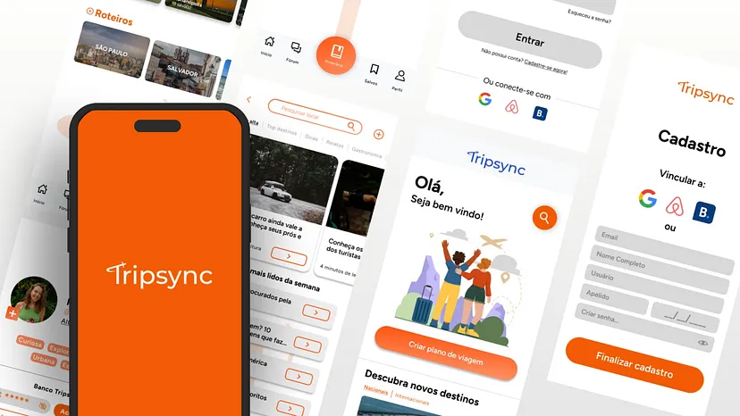
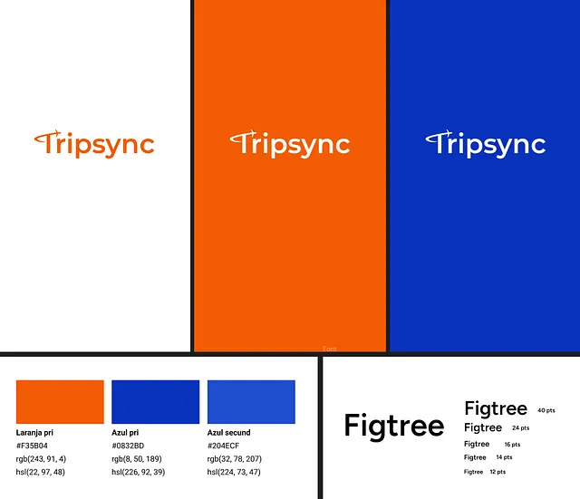

App de Viagens: Personalização para Escalar Engajamento
Desenvolvimento estratégico de um aplicativo de planejamento de viagens focado em unificar a jornada, reduzir o atrito operacional e otimizar a conversão de novos usuários por meio de rotinas personalizadas.

O Contexto & O Desafio
Coordenar transportes, hospedagens e atividades locais em um único ecossistema fluido continua sendo um gargalo crônico no mercado de turismo. Dados do Google apontam que aproximadamente 70% dos turistas reportam estresse no planejamento de rotas complexas. O desafio de negócio consistiu em mitigar essa fricção unificando as etapas de agendamento e gerenciamento em uma solução adaptável de zero fricção.
Discovery & Pesquisa
O processo de discovery mapeou o fluxo comportamental do usuário desde o gatilho inicial até a execução física do roteiro. O objetivo foi diagnosticar os principais pontos de quebra na experiência digital e entender os fatores críticos de abandono de plataformas tradicionais.
Problem Statement
No cenário atual, a experiência e a autonomia possuem maior peso na decisão de compra do que o custo bruto. Plataformas inflexíveis e processos excessivamente burocráticos geram quebra de expectativa e consequente churn no primeiro ciclo de uso.
A Jornada Digital do Consumidor
O planejamento de viagens tornou-se uma experiência digital, com 97% dos participantes utilizando a internet e aplicativos para organizar suas viagens.
Problema a Ser Resolvido
A ausência de um produto digital centralizado capaz de processar o histórico do viajante e gerar personalização em tempo real de acordo com as variáveis dinâmicas da viagem.
Pesquisa Qualitativa
Utilizamos algumas ferramentas para a estruturação da solução, as principais foram a matriz CSD com Mapa relacional para verificar as principais necessidadas do modelo e o Business model canvas com Análise SWOT para formular, mensurar o desenvolvimento e analisar estratégicamente os pontos positivos e negativos para o growth do app;


Persona Central
O desenvolvimento da arquitetura e das interfaces foi orientado pelo perfil de Paula Martins, representando o segmento de usuários de alta exigência operacional que necessita de previsibilidade de dados combinada à flexibilidade logística.
Paula Martins, 28 anos
Gerente de Banco | São Paulo - SP
Biografia: Profissional do setor financeiro com rotina corporativa intensa. Busca otimização rígida de tempo e custos nas viagens, demandando interfaces que absorvam imprevistos logísticos de maneira ágil.
- Explorar atividades e imersões de valor local genuíno.
- Equilíbrio claro entre eficiência financeira e qualidade do serviço.
- Maximizar o aproveitamento cronológico das janelas de viagem.
- Roteiros tradicionais inflexíveis a imprevistos operacionais.
- Falta de transparência e surgimento de custos ocultos.
- Fricção no ajuste de cronogramas de última hora.
Direcionamento Estratégico
1. Personalização Orientada a Dados: Recomendações preditivas baseadas no entorno geográfico imediato e no perfil de consumo histórico.
2. Flexibilidade Operacional: Arquitetura de interface focada em alteração ágil de rotas com reajuste automático de cronogramas para mitigar estresse cognitivo.
Ideação e Conceituação
O fluxo de trabalho partiu de mapeamentos funcionais e sketches analógicos direcionados ao controle de gastos integrados e simplificação de burocracias do mercado turístico, validando hipóteses antes de avançar para a interface final.


Validação de Fluxo Visual
Design Visual e UI: Da Estratégia à Execução
O desenvolvimento avançou diretamente para os wireframes de média e alta fidelidade no Figma, eliminando suposições estéticas e estruturando uma biblioteca de componentes consistentes. O layout limpo, focado em forte hierarquia tipográfica, garante navegação imediata e usabilidade limpa alinhada aos objetivos de negócio.

Testes
Os testes de usabilidade foram conduzidos com base no questionário e nas entrevistas, utilizando os insights do perfil da persona Paula Martins (28 anos, Gerente de Banco, exploradora). O processo de descoberta da persona, focado em otimizar custos e produtividade, tornou-se essencial para a criação dos sketch wireframes e protótipos.
Objetivo dos Testes: Validar se a solução Tripsync consegue resolver as dores identificadas, principalmente as relacionadas ao estresse e ao desperdício de tempo na organização do roteiro.
Descobertas e Iterações